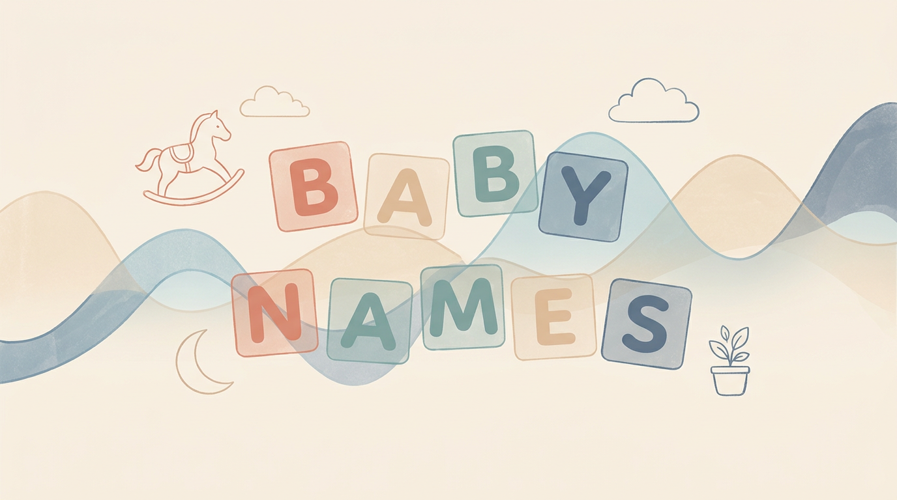

The Story of the Name Celise
An Interactive Exploration of U.S. Social Security Baby Names

207
Total Recorded
1962
Debut Year
11
Peak Annual Births
100%
Female
Visual Demographics
The timeline tracks registered births of Celise since 1962, consistently hovering between 5 and 11 births per year.
The population pyramid displays estimated age groups for Celises today: over half (119 out of 207) are under age 20, and 100% are female.
🔍 Historical Records Explorer
Filter, sort, and export every recorded year for the name Celise. Use the search inputs and slider filters at the top of each column to explore specific decades or age groups!
🎮 Name Detective: The Celise Quiz
Test what you learned from the data in this interactive mini-game!